Red Hat OpenStack Administration I: Core Operations for Domain Operators
CL110
Course Objectives and Structure
Schedule
|
Introduction
|
Managing Red Hat OpenStack Platform Networking
|
Providing Additional Storage Strategies
|
Automating Customized Cloud Application Launches
|
|
Introducing Red Hat OpenStack Platform
|
Configuring Resources to Launch a Non-public Instance
|
Configuring Resources to Launch an Instance with Public Access
|
Managing Cloud Application Placement
|
|
Managing Application Projects in a Multitenant Cloud
|
Configuring Virtual Machine System Disks
|
Automating Customized Cloud Application Launches
|
Comprehensive Review
|
|
Managing Red Hat OpenStack Platform Networking
|
Providing Additional Storage Strategies
|
|
|
Orientation to the Classroom Environment
Chapter 1: Introducing Red Hat OpenStack Platform
Goal: Describe OpenStack personas, launch an instance, and describe the OpenStack components and architecture.
Objectives:
-
Describe the personas in the cloud ecosystem that characterize the use cases and tasks taught in this course.
-
Create the requisite resources and launch a simple virtual machine instance.
-
Describe the purpose, resources, and terminology of the Red Hat OpenStack Platform core services.
-
Describe a single-site Red Hat OpenStack Platform overcloud architecture, including the purpose and layout of each of the default node roles.
Describing OpenStack Personas
Introducing Cloud Personas
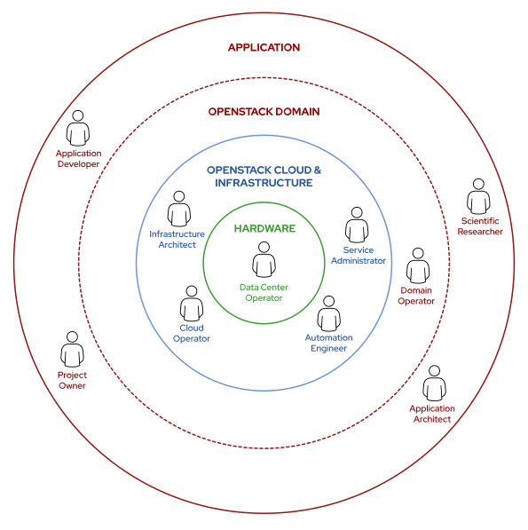
OpenStack persona ecosystem
OpenStack Personas in this Course
Quiz: Describing OpenStack Personas
Describing the OpenStackClient
Managing Applications and Networks with Projects
Launching a Minimal Instance
Launching an instance from the Command Line
Accessing the Instance Console
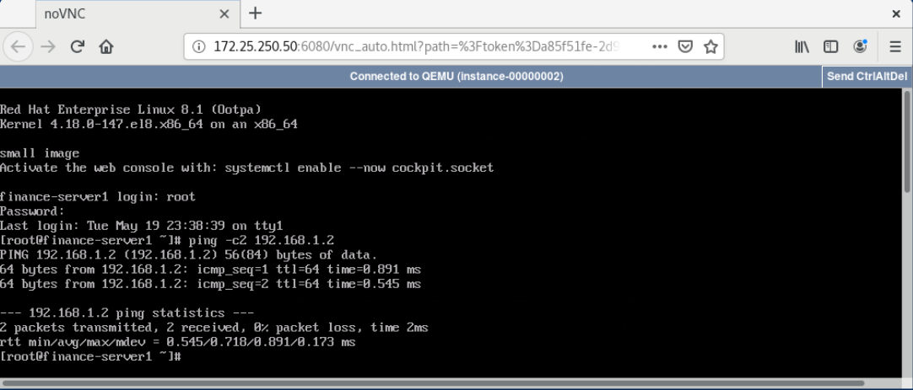
The VNC console in a browser
Managing Resources in the OpenStack Dashboard
Launching an instance from the Dashboard
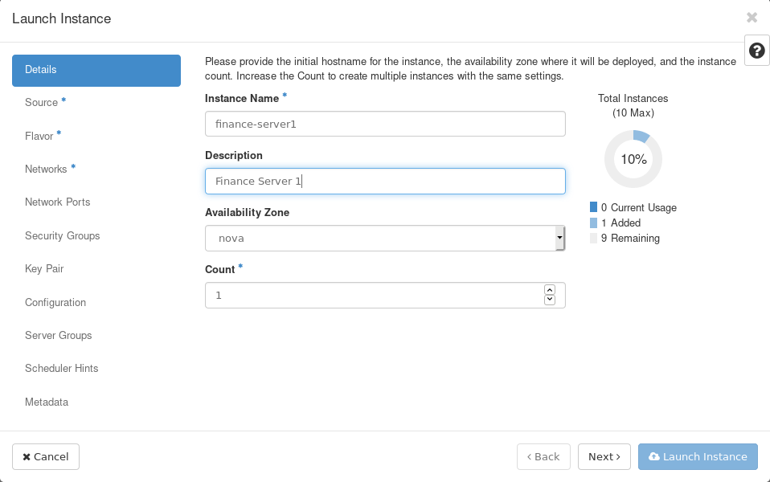
The Launch Instance Details window
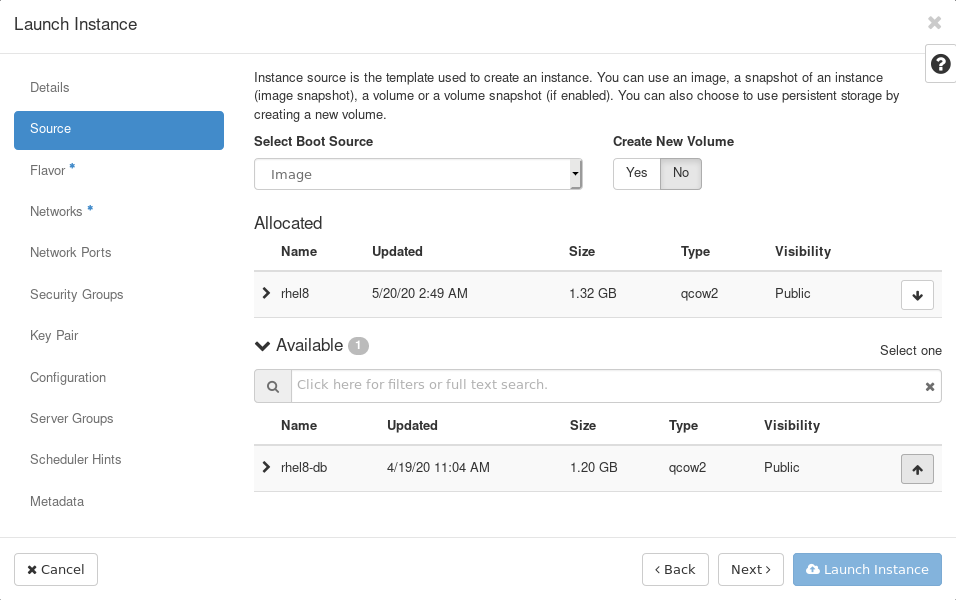
The Launch Instance Source window
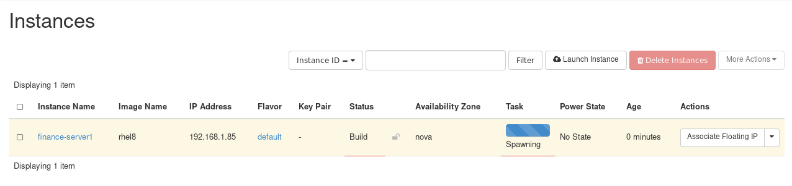
The Instances page with a spawning instance
Guided Exercise: Launching an Instance
Describing Red Hat OpenStack Platform Services
Red Hat OpenStack Platform Overview
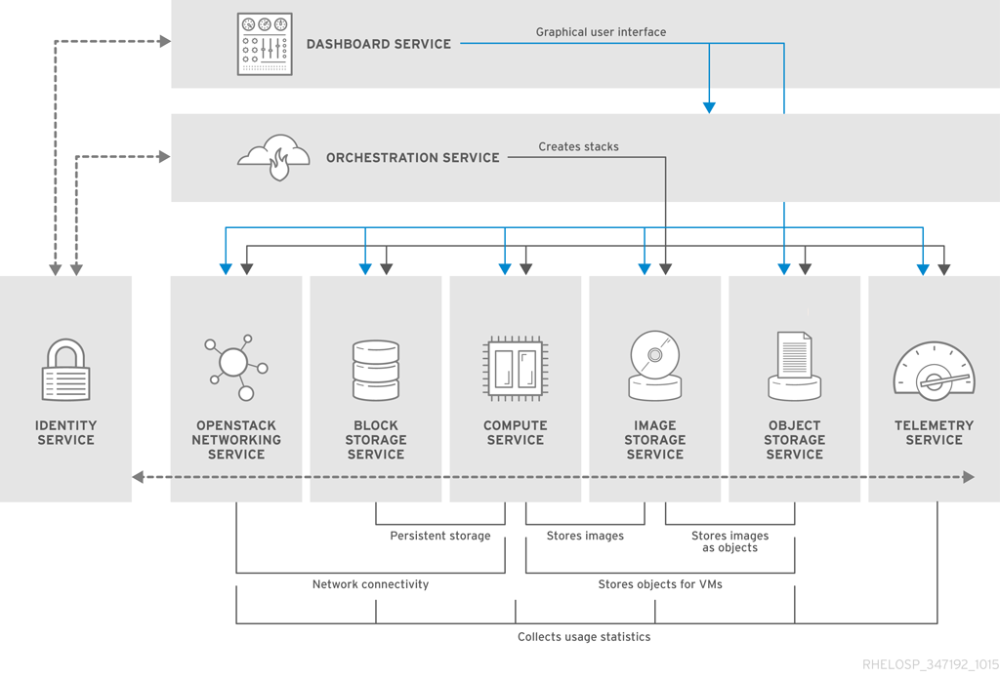
OpenStack core services
Services Covered in this Course
OpenStack Container Deployment Tools (Kolla)
Listing, Verifying, and Managing OpenStack Services
Listing the Status of the OpenStack Services
Verifying the OpenStack Services
Managing the OpenStack Services
Guided Exercise: Describing Red Hat OpenStack Platform Services
Describing a Single-site Overcloud Deployment
Describing Red Hat OpenStack Platform Deployments
Describing OpenStack Roles
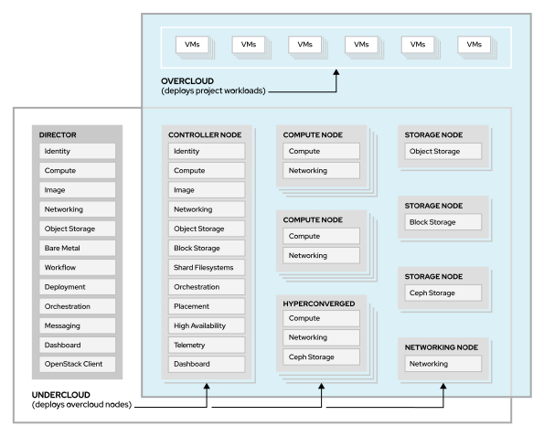
OpenStack nodes and roles
Describing a Single-site Deployment
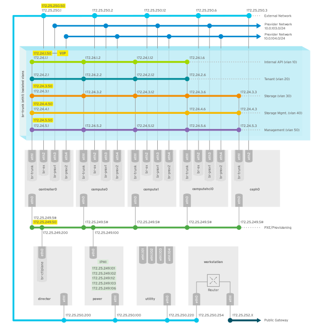
Example Single-site OpenStack deployment
Quiz: Describing a Single-site Overcloud Deployment
Lab: Introducing Red Hat OpenStack Platform
Summary
- There are several personas in the OpenStack ecosystem, and Red Hat has used the Domain Operator persona to define the use cases and operations for this course.
Your role may include the responsibilities of more than one persona.
- OpenStack can be managed using the
openstack unified command-line client, or with the browser-based Dashboard.
- Launching an instance requires a minimum of three items specified; the image, the flavor, and the network.
- OpenStack has many services including Compute, Image, Orchestration, Identity, Networking, and Object Store.
Summary (continued)
- There are three predefined roles for nodes in an OpenStack deployment;
control, compute, and ceph-storage.
The predefined roles are collections of related services, however you can create a custom role by combining services in a way that suits your needs.
- To ensure high availability of services, there are some minimum node numbers for certain roles. You should have a minimum of three control nodes, and three ceph-storage nodes if you are using Ceph. Compute node capacity should allow for at least a single node failure. That is, if you need N compute nodes to support your workload, you should deploy N+1 compute nodes.
Chapter 2: Managing Application Projects in a Multitenant Cloud
Goal: Create and configure projects with secure user access and sufficient resources to support cloud user application deployment requirements.
Objectives:
-
Describe the use of OpenStack domains and projects to segregate applications and users, and create projects and user environments.
-
Manage users and groups accessed from an enterprise identity management directory, and assign users with selected roles and privileges to projects.
-
Manage resource quotas for an individual project, to ensure sufficient resource availability and protection from misuse.
Creating a Project Environment for Managing Applications and Resources
Introduction to the Identity Service
Managing OpenStack Domains and Projects
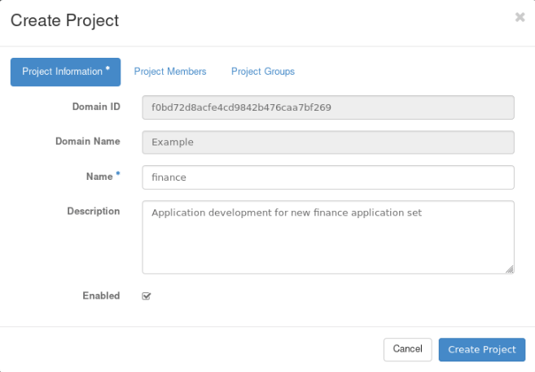
Creating projects on the Dashboard
Guided Exercise: Creating a Project Environment for Managing Applications and Resources
Providing Cloud User Access to Projects
Considerations for OpenStack Domains
Introducing OpenStack Users
Describing OpenStack Roles
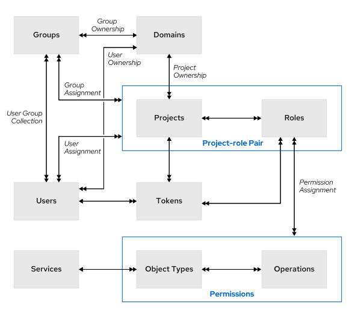
User and role relationship to projects
Requesting an Authorization Token Using the Authentication Parameters
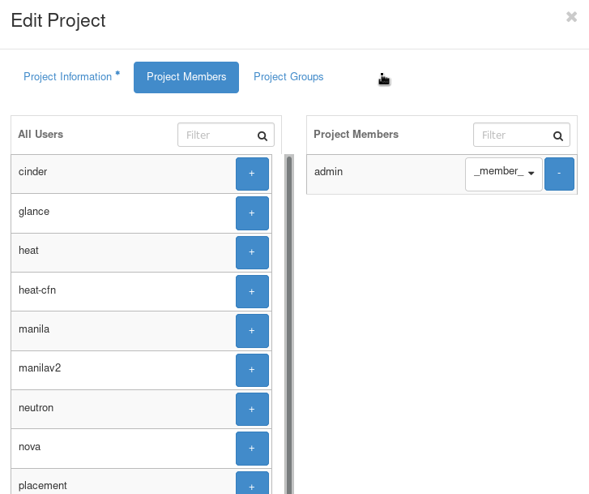
Adding users to a project from the Dashboard
Guided Exercise: Providing Cloud User Access to Projects
Configuring Resource Limits in Projects
Introduction to Project Quotas
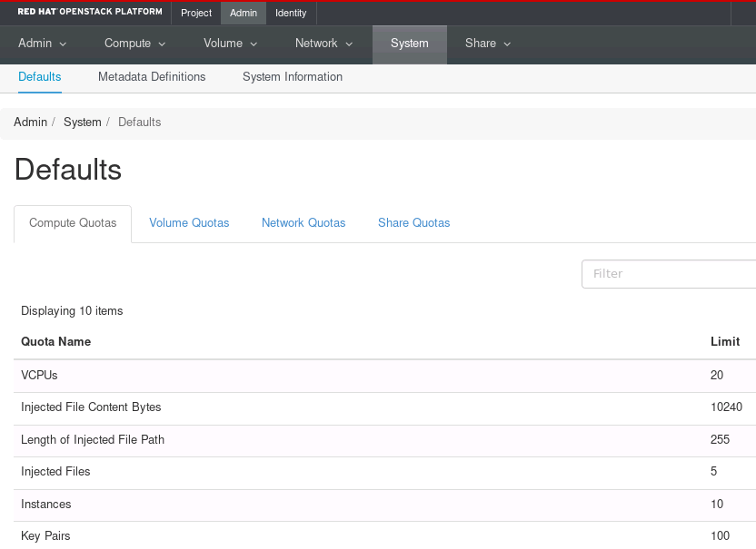
Displaying the default limits for compute
Guided Exercise: Configuring Resource Limits in Projects
Lab: Managing Application Projects in a Multitenant Cloud
Summary
- Domains allow an external identity store to be integrated with OpenStack, while keeping the users and groups it contains separate from any other identity source.
- Projects restrict access to a set of resources, such as volumes, networks, and instances. They are commonly used to group resources for a specific application. Projects can be nested to create a hierarchy, allowing roles to be assigned at the top level and inherited by child projects.
- Three default user roles are provided with OpenStack; admin, member, and reader. The reader role is new, and implemented by many but not all OpenStack components The reader role is used for application credentials.
Summary (continued)
- There are three authorization scopes that you will use when assigning roles to users. The system scope applies to the OpenStack platform itself. The domain scope applies at the domain level, allowing the creation of projects within a domain. The project scope is used to allow permissions and resource access at the project level.
- Quotas allow administrators to restrict the quantity of resources a project may consume. They do not currently operate in a hierarchical method, so administrators must manage quotas for hierarchical projects independently.
Chapter 3: Managing Red Hat OpenStack Platform Networking
Goal: Describe how IP networks are implemented in OpenStack, including fundamental TCP/IP stack behavior, software defined networking elements, and the common types of networks available to self-service cloud users.
Objectives:
-
Discuss TCP/IP network stacks concepts, terminology, and the behavior of specific network stack layers.
-
Describe software defined networking, Open Virtual Networking switch architecture, and table-driven flow concepts.
-
Describe and compare the network types available to self-service cloud users, including tenant, external and provider networks.
Reviewing TCP/IP Fundamentals
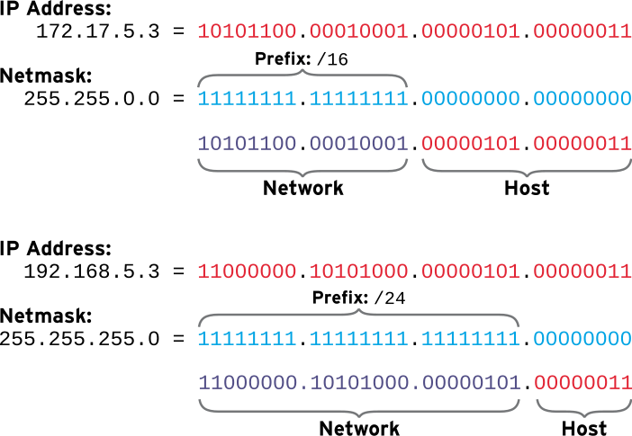
IPv4 addressing and netmasks
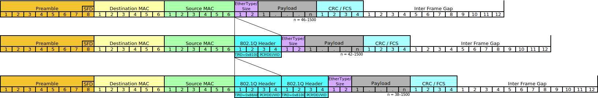
Ethernet headers in a network packet
Integration of IP and Ethernet
Partitioning with Virtual LAN
Software-defined Network Processing
Quiz: Reviewing TCP/IP Fundamentals
Introducing Software-defined Networking
Introduction to Open Virtual Network (OVN)
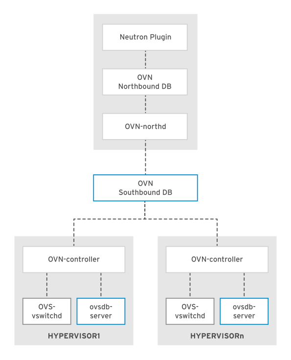
OVN control plane architecture
Quiz: Introducing Software-defined Networking
Implementing Tenant, Provider and External Networks
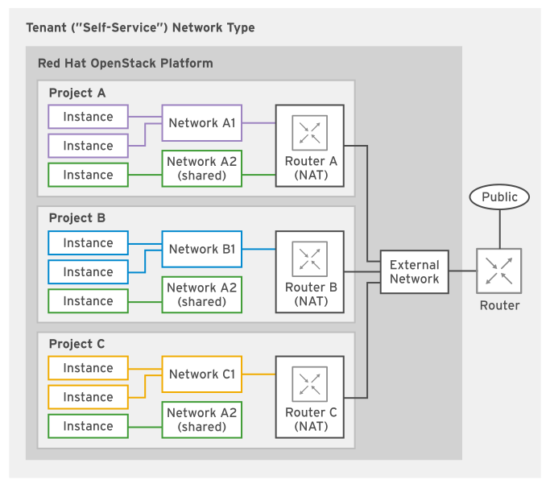
The self-service tenant networking scenario
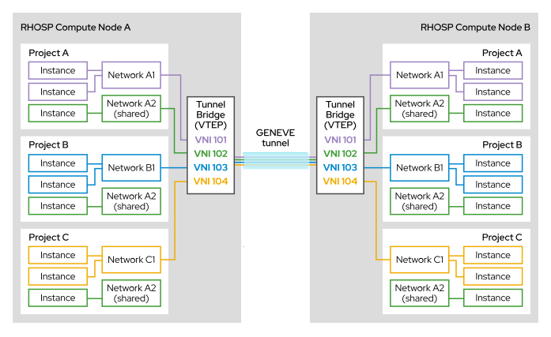
The self-service tenant networking scenario using tunneling to remote overcloud nodes
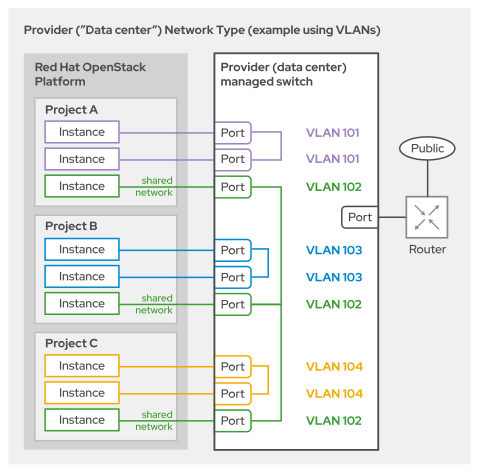
The provider networking scenario using a data center provided hardware switch with VLANs.
Viewing Network and Subnet Parameters
Viewing the Networks using the Dashboard
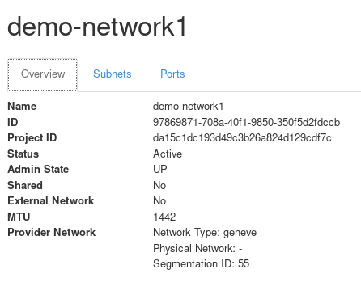
Network description in the Dashboard
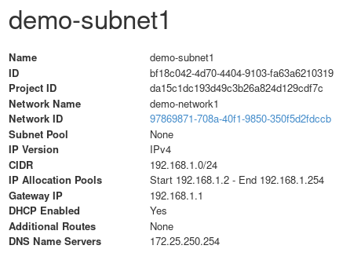
Subnet description in the Dashboard
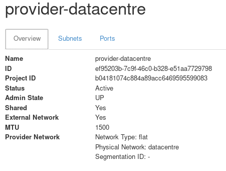
Provider network description in the Dashboard
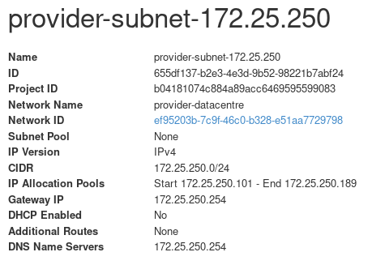
Provider subnet description in the Dashboard
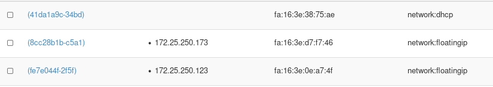
Floating IP list in the Dashboard
Guided Exercise: Implementing Tenant, Provider and External Networks
Lab: Managing Red Hat OpenStack Platform Networking
Summary
- OVN is the default SDN solution for Red Hat OpenStack Platform. It replaces the OVS ML2 driver and the neutron agent with the OVN ML2 driver. The OVS ML2 driver had some limitations and complications. The OVN ML2 driver addresses those problems.
- The OVN database is installed in a central location. It can be installed on a physical node, a virtual node, or on a cluster. The choice of location depends on various factors, including the size of the cloud infrastructure, the geographic dispersion of the cloud, the volume of traffic, and the performance required. The hypervisors must run Open vSwitch for OVN to work.
- OVN implements DHCP and OpenStack security groups. The OVN gateway links the overlay network to the physical network. The overall OVN architecture and configuration simplifies OpenStack networking.
- Self-service, or tenant, networks are a common network type in many OpenStack installations. They only contain virtual components. Only instances within the project can use tenant networks.
Summary (continued)
- Provider, or data center, networks are the most common production network type at RHOSP installations. They are defined using the existing data center networks and VLANs. Provider networks are shared and can be configured to be used by any project's instances.
- Tenant instances which require external access must be created on a network with a router providing access to the public network. A floating IP address must be added to instance as the fixed IP address assigned at creation cannot be used on the public network.
Chapter 4: Configuring Resources to Launch a Non-public Instance
Goal: Configure the requisite resource types for launching a basic non-public instance, including vCPUs, memory, and a system disk image, and launch an instance of an application component that runs in a tenant network with no public access.
Objectives:
-
Define the resources that control the function, size, and capacity of a running instance.
-
Create the network configuration and IP addressing for launching tenant instances.
-
Select and manage relevant parameters for launching a non-public, tenant instance.
Defining a Virtual Machine by Specifying an Image and a Flavor
Defining Storage in Flavors
Coordinating Image and Flavor Sizing
Other Parameters in a Flavor
Setting the Root User Password for an Instance
Guided Exercise: Defining a Virtual Machine by Specifying an Image and a Flavor
Creating Project Networks and Subnetworks
Describing OpenStack Tenant Networks
Guided Exercise: Creating Project Networks and Subnetworks
Launching and Verifying a Non-public Instance
Verifying a Running Instance
Verifying Available Resources using the Dashboard
Guided Exercise: Launching and Verifying a Non-public Instance
Lab: Configuring Resources to Launch a Non-public Instance
Summary
- An image is a file containing a virtual disk installed with a bootable operating system. Images are managed by the Image Service (Glance). An image is one of the fundamental requirements for deploying instances.
- Images are stored and managed by the Image service, which manages the catalog of images. Depending on configurable attributes, images are available to some or all users.
- You must specify a flavor to deploy an instance. The Compute service schedules the deployment by checking the compute nodes for sufficient available resources, as requested by the flavor. If no host (compute node) can be found with sufficient resources, the instance deployment fails.
Summary (continued)
- Customize a flavor so that hardware requirements meet user needs. In addition to system disk and memory size, and the number of VCPUs, you can define other parameters, such as adding a swap disk or additional ephemeral disk.
- Projects are provided with their own networks by the OpenStack Networking Service. These networks are isolated using Virtual Local Area Network (VLAN) segregation (every project network is a network VLAN).
Chapter 5: Configuring Virtual Machine System Disks
Goal: Identify the available choices for configuring, storing and selecting block-based virtual machine system disks, including the choice of ephemeral or persistent disks for specific use cases.
Objectives:
-
Describe the purpose, use cases and storage choices when selecting ephemeral disks for instances.
-
Describe the purpose, use cases and storage choices when selecting persistent volumes for instances.
-
Manage block-based storage elements and activities for common application data use cases.
Configuring Ephemeral Disks
Storage in Red Hat OpenStack Platform
Recommended Practices for Block Storage
Back-end Files for Ephemeral Storage
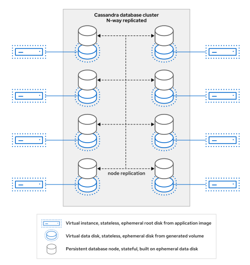
Cassandra on ephemeral storage
Guided Exercise: Configuring Ephemeral Disks
Configuring Persistent Disks
Persistent Storage in Red Hat OpenStack Platform
Supporting Legacy Application Storage Requirements
Managing Volumes Using the CLI
Managing Volumes using the Dashboard
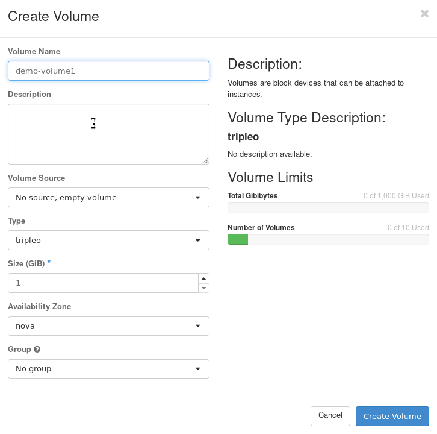
Creating a volume in the Dashboard
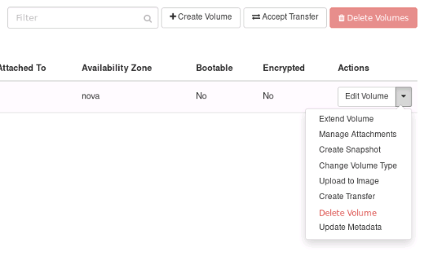
Managing a volume in the Dashboard
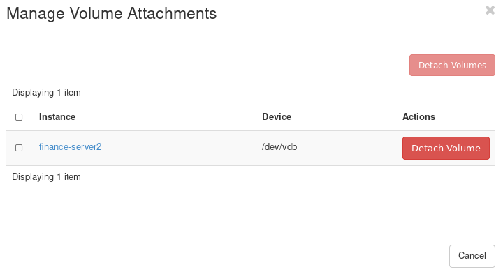
Detaching a volume in the Dashboard
Guided Exercise: Configuring Persistent Disks
Managing Volumes and Snapshots
Guided Exercise: Managing Volumes and Snapshots
Lab: Configuring Virtual Machine System Disks
Summary
- Instances are ephemeral by default, meaning that the virtual disks are destroyed with the instance.
- To create an instance with additional ephemeral storage, create a flavor that specifies an ephemeral disk size greater than zero, and then launch an instance using that flavor.
- Persistent volumes are created independently of the instance, and can be attached while the instance is running.
- Volumes can be transferred between projects.
- Snapshots are stored in the same location as volumes, and define the state of a volume at a point in time.
Chapter 6: Providing Additional Storage Strategies
Goal: Identify the available choices for additional cloud storage techniques, including object-based storage, network file sharing, and volumes sourced from a file sharing service.
Objectives:
-
Describe the purpose, benefits and operations for object-based storage use cases. Create and manage containers, folders and objects.
-
Analyze and compare the common technologies for general object storage use cases.
-
Provide remote file sharing services for common application file share storage use cases.
Implementing Object Storage
Introducing Object Storage
Defining Object Storage Use Cases
Describing Object Characteristics
Object Storage Technology
The Use of Object Storage in OpenStack
Application Use Cases for Object Storage
Using Object Storage in the Dashboard
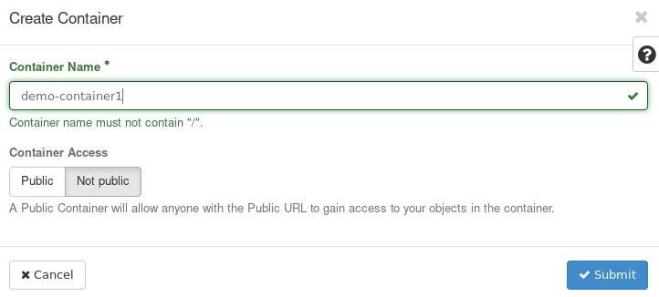
Container creation in the Dashboard
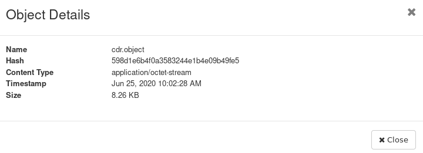
Object details in the Dashboard
Guided Exercise: Implementing Object Storage
Analyzing Object Storage Technologies
Comparing Swift, Ceph RGW, and Amazon S3
Guided Exercise: Analyzing Object Storage Technologies
Implementing NFS Shared Storage
Basic Shared File Systems Operations
Describing the Shared File System Service (manila)
Describing the Shared File System Service Architecture
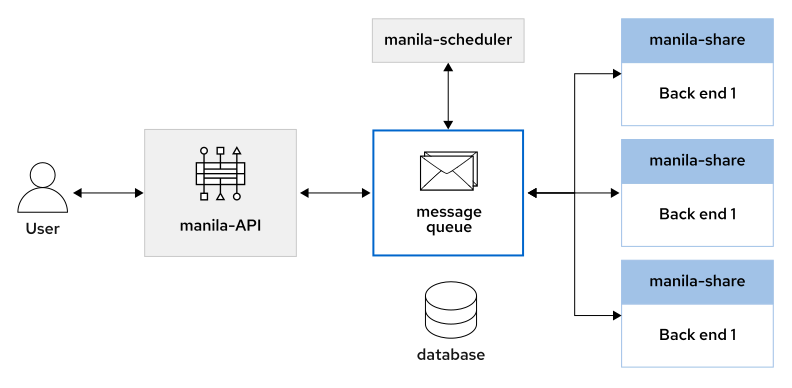
The OpenStack Shared File System service architecture
Shared File System on Ceph via CephFS Native Driver
Managing Shared File Systems Using the CephFS Native Driver
Shared File Systems Use Cases
Using Shared File Systems in the Dashboard
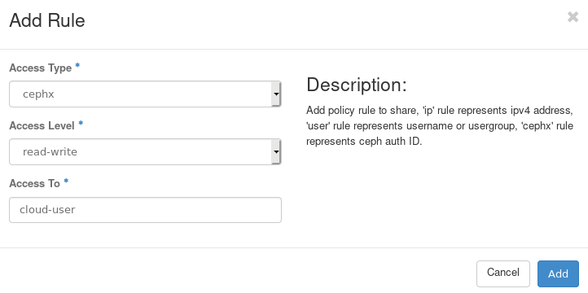
Share rule creation in the Dashboard
Guided Exercise: Implementing NFS Shared Storage
Lab: Providing Additional Storage Strategies
Summary
- An object is stored as a binary file along with metadata which is stored in the file's extended attributes (xattrs). Objects can be text files, videos, images, emails, or virtual machine images. Objects are simply identified with a GUID and have no relationship to other objects in the container.
- Many of the OpenStack services use swift for object storage. Glance creates images but cannot actually store them, it utilizes swift as an image store Cinder backups can also be stored in swift. The Nova service can create snapshots of instances which are passed to Glance for storage in a swift container. Ironic stores introspection results as objects in swift. Ironic bare metal images are stored in a swift container. Swift also supports the Amazon Simple Storage Service (S3) API.
Summary (continued)
- The choice of object storage technology can be affected by several factors, including cost, existing storage investment, and application requirements. However, the decision should also be based on an understanding of the technologies and their features as they pertain to business. needs.
- The OpenStack Shared File System service enables tenant users to provision and manage network accessible shared file systems or shares. Tenant users access the shares from instances as remote file systems.
- Manila is designed with the ideal NAS architecture in mind. Manila supports several different protocols, including NFS, CIFS, CephFS, MAPRFS, HDFS, and GlusterFS. It offers many different features, including quota control, tenant driven share replication, snapshots for cloning, and access control and authentication services.
Chapter 7: Configuring Resources to Launch an Instance with Public Access
Goal: Identify and configure the additional resource types required to launch instances with public access, including networking and access security elements, for specific use cases.
Objectives:
-
Manage the provider and external network configuration and IP addressing needed to launch instances with public access.
-
Describe the use cases and configuration choices when selecting a router configuration and floating IPs for tenant network instances.
-
Manage the security groups and key pairs that control access to tenant and provider instances with public access.
-
Select and manage relevant parameters for launching instances with public access, for common use cases.
Managing Provider and External Networks
Describing OpenStack Networking for Public Applications
Managing Networks Using the CLI
Managing Networks Using the Dashboard
Guided Exercise: Managing Provider and External Networks
Managing Routers and Floating IPs
Hosting Public Instances on Tenant Networks
Managing Routers in OpenStack
Introduction to Floating IP Addresses
Managing Floating IP Addresses in OpenStack
Processing Network Packets
Managing Routers From the Dashboard
Managing Floating IP Addresses Using the Dashboard
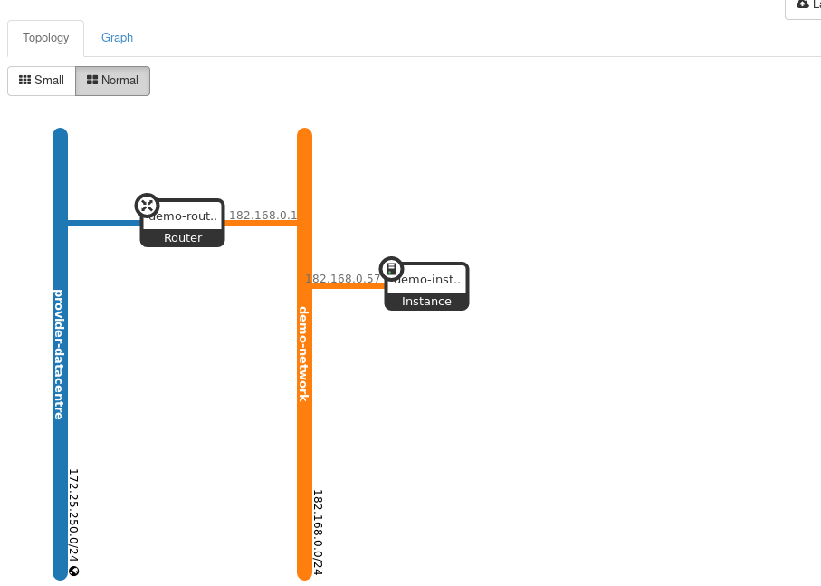
Displaying the network topology
Guided Exercise: Managing Routers and Floating IPs
Managing Secure Instance Access
Implementing Key Pairs in OpenStack
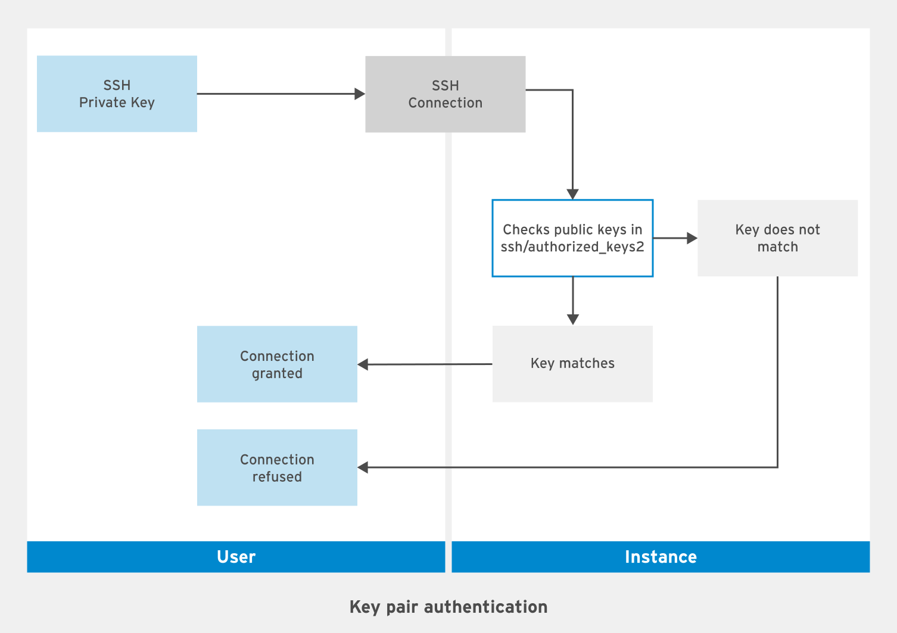
Using keys to connect to remote instances
Managing Key Pairs in the Dashboard
Introducing Security Groups
Describing Security Groups
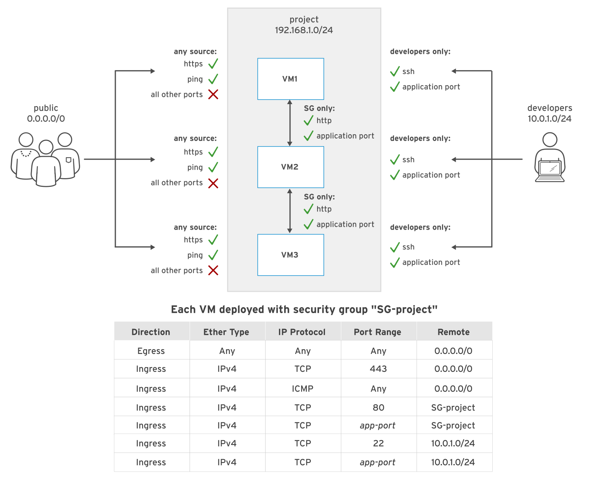
Using security rules to define access
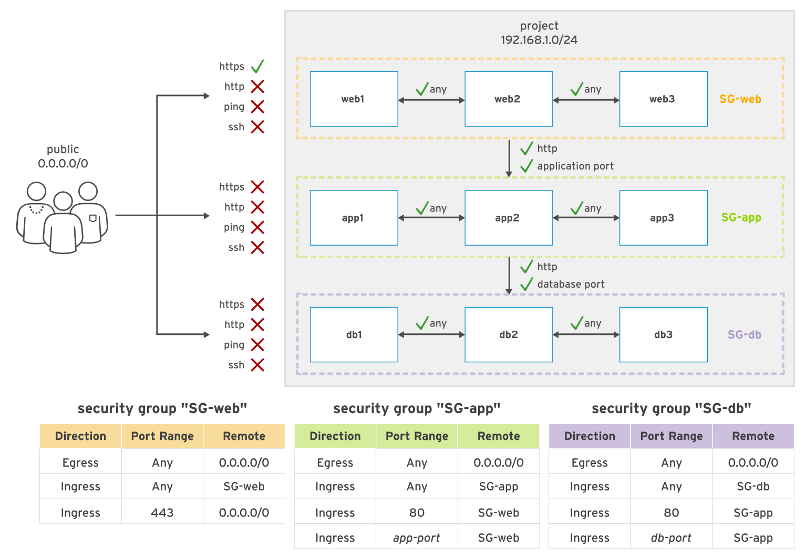
Using security rules to manage access
Managing Security Groups and Rules Using the CLI
Managing Security Groups in the Dashboard
Guided Exercise: Managing Secure Instance Access
Launching and Verifying an Instance with Public Access
Defining an Instance with Public Access
Launching an Instance with Public Access
Verifying an Instance with Public Access
Verifying Instance Services
Troubleshooting Connections to Instances
Launching an Instance Using the Dashboard
Guided Exercise: Launching and Verifying an Instance with Public Access
Lab: Configuring Resources to Launch an Instance with Public Access
Summary
- Public-facing applications require deploying an instance either on a provider network using an external network with DNS and DHCP configured, or on a tenant network with an associated floating IP address.
- Provider networks can be of type local, Flat, VLAN, GRE, VXLAN, or GENEVE. Provider networks are the most common type of network used by OpenStack clients.
- Routers are a logical OpenStack component that forwards packets between different networks. An external network must have an allocation pool to provide floating IP addresses to be used for public access path for tenant networks using routers.
Summary (continued)
- SSH key pairs allow passwordless, secure, and trusted access to remote servers. You can create new key pairs in OpenStack, or import existing key pairs. When a new key pair is created, the public key is stored in the Compute service database and the private key is stored locally.
- An instance with public access is an instance that has access to the external network. A public instance should be protected using a key pair and a security group.
- A key pair cannot be attached to an instance after creation. The instance must be deleted and recreated with the
--key-name option.
Chapter 8: Automating Customized Cloud Application Launches
Goal: Configure and deploy a typical multitier cloud application stack, defined as an architected template of scalable VM instances, including per-instance launch customizations.
Objectives:
-
Configure an instance with run time customizations performed at launch.
-
Describe the architecture of common cloud application examples.
-
Describe a 3-tier web application, as defined in the stack template used to launch the application.
Customizing an Instance at Launch with Cloud-init
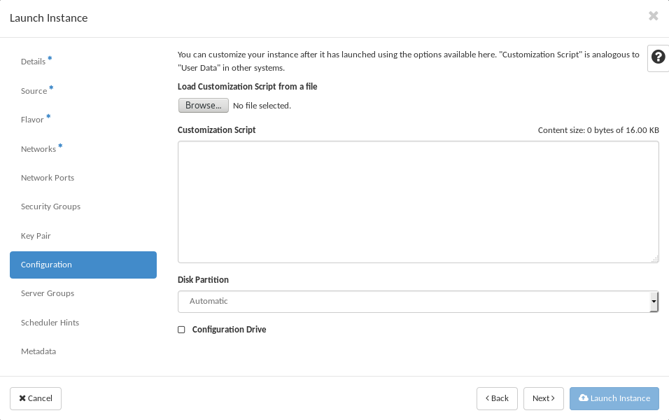
Customizing an instance while launching in the Dashboard
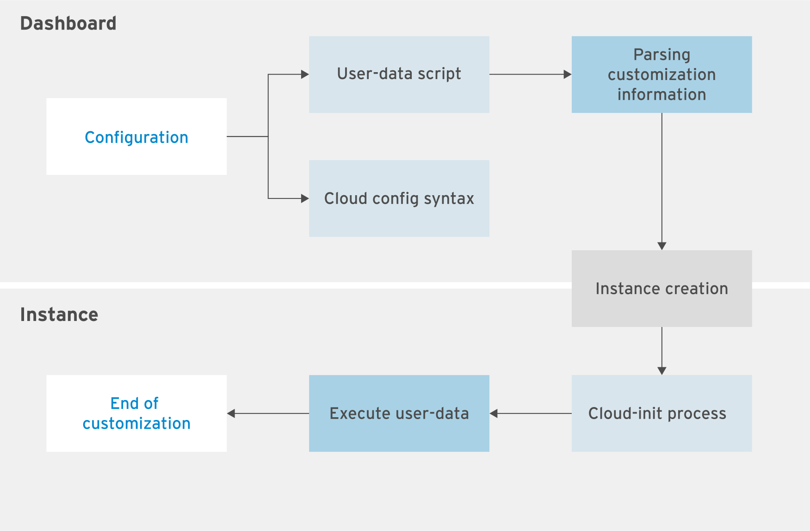
Customizing an instance using cloud-init
Verifying Instance Customization
Guided Exercise: Customizing an Instance at Launch with Cloud-init
Describing Cloud Application Architecture
Describing Cloud Application Architecture
Structure of a Cloud-based Common Stack
Describing 3-tier Web Application Architecture
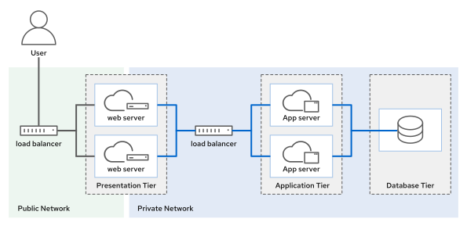
3-tier Web Application Architecture Overview
Analyzing 3-tier Web Application Hot Files
Create an Application Credential Using the Dashboard
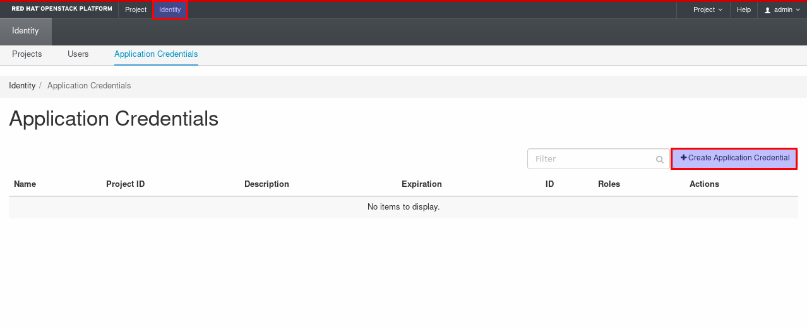
Creating an application credential
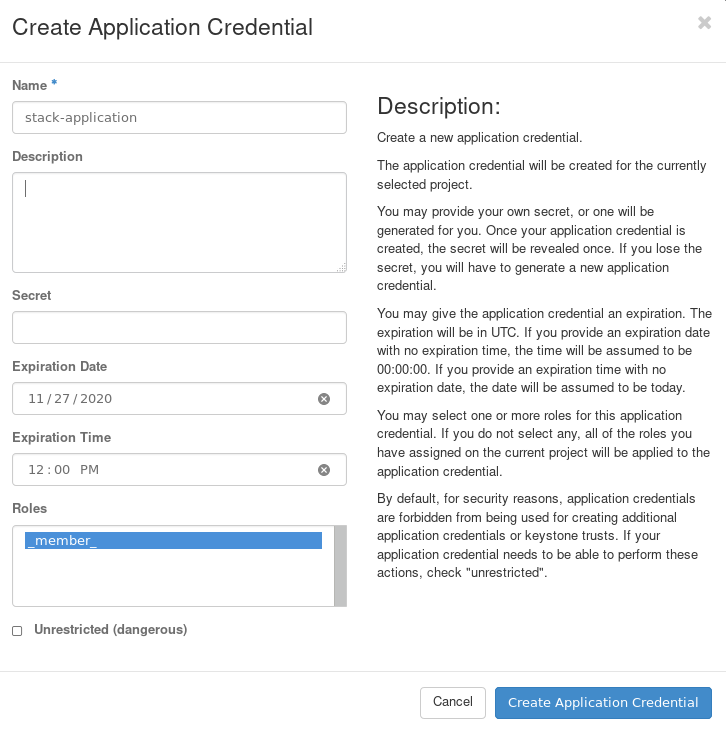
Creating an application credential
Quiz: Describing Cloud Application Architecture
Launching a Cloud Application Stack
The Orchestration Service
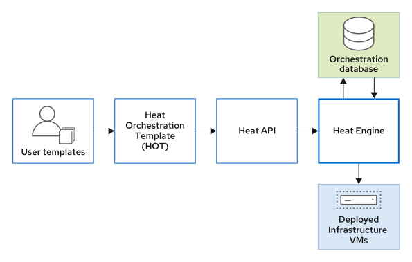
Orchestration flow chart
Deploying 3-tier Web Application Architecture
Creating a 3-tier Web Application from the Dashboard
Guided Exercise: Launching a Cloud Application Stack
Lab: Automating a Customized Cloud Application Launch
Summary
- OpenStack uses cloud-init to customize an instance during deployment, for tasks such as injecting SSH public keys and configuring the host name. Cloud users can also pass user data to cloud-init to perform customization of the operating system or applications. Cloud-init accepts user data in several formats, including raw shell scripts and cloud-config formatted YAML.
- Applications designed to take advantage of a cloud architecture utilize features such as load balancing, dynamic scaling, and a mixture of ephemeral and persistent storage for instances. Existing enterprise applications can be moved to the cloud without altering the architecture, however this is more costly in the long term.
- Cloud applications deployed on OpenStack can be defined as a stack, using Heat templates. These templates can create any number of OpenStack resources, such as networks, routers, security groups and rules, instances, and load balancers.
Summary (continued)
- Heat templates have three main sections. The
parameters section allows arguments to be passed in. The resources section defines the OpenStack objects to create. Finally, the outputs section defines values that can be output after the stack has been deployed.
- Users can create application credentials, allowing deployed applications to authenticate to OpenStack services.
- Application stacks are managed using the various subcommands of the
openstack stack command.
Chapter 9: Managing Cloud Application Placement
Goal: To introduce overcloud layouts more complex than a single site, and explain the management resources to control the placement of launched instances, including segregation elements such as cells and availability zones, and placement attributes such as requisite compute node resources.
Objectives:
-
Describe the architecture and organization of overcloud deployments, for common vertical market use cases.
-
Describe and manage the placement service and filters which are used to control where application instances launch.
Describing Multi-site Overcloud Deployments
Overcloud Design Considerations for Multiple Sites
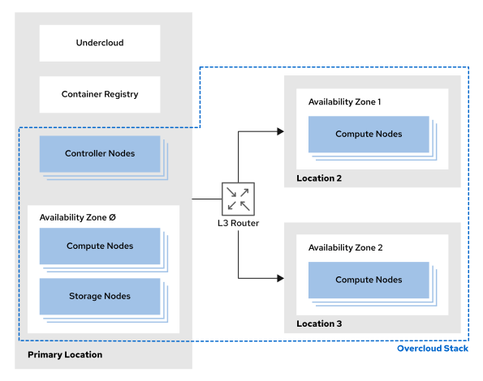
Single stack using availability zones
Limitations of the Dashboard
Quiz: Describing Multi-site Overcloud Deployments
Configuring the Placement Service
Describing the Placement Service
Quiz: Configuring the Placement Service
Lab: Managing Cloud Application Placement
Summary
- You can perform a multisite deployment using a single or multiple stacks. Stacks can be managed, scaled, and updated separately.
- Not all nodes within a stack need to be located in the same physical location. The
openstack stack list command is used to list all available stacks within the overcloud.
- Hyperconverged is a node configuration that combines a normal hypervisor compute role with local Ceph OSDs on the same compute node. Red Hat Hyperconverged Infrastructure always uses Ceph as the storage component.
- Resource segregation is important to permit large horizontal scalability for cloud applications. It means that infrastructure can be grouped based on physical characteristics or functionality. Workload segregation can work at host level or CPU level.
Summary (continued)
- The Placement service offers a REST API stack and data model used to track resource provider inventories and usage. It includes a database to store information from the overcloud infrastructure, such as node attributes and location, CPU count, and free and used memory.
- The resource provider manages quantitative aspects at the boot request. It has a collection of inventory and allocation objects to manage these quantitative requests. However, the resource provider also needs to manage nonconsumable, or qualitative, resources.
Chapter 10: Comprehensive Review
Goal: Review tasks from Red Hat OpenStack Administration I: Core Operations for Domain Operators
Objectives:
Reviewing Red Hat OpenStack Administration I: Core Operations for Domain Operators
Lab: Configure a Project and Resources
Lab: Deploy a 3 Tier Application Stack